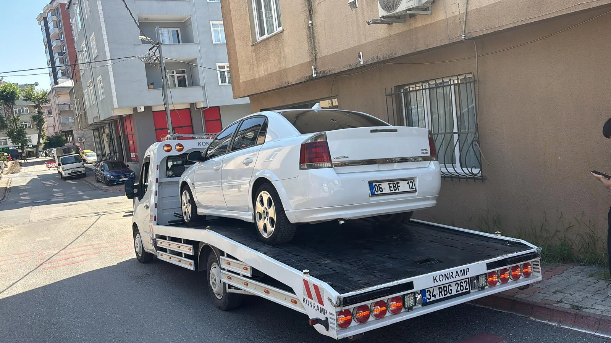

⚡ 15 Dk VarışÇEKİCİ & ARAÇ TAŞIMA
Binek, sedan, hatchback ve SUV araçlarınız için sıfır eğimli hidrolik kayar platform ile tampon ve alt takıma sıfır temas garantili taşıma.
- Düşük Açılı Hidrolik Kayar Kasa
- %100 Kaskolu & Sigortalı Transfer
- Sabit Kilometre Fiyatı